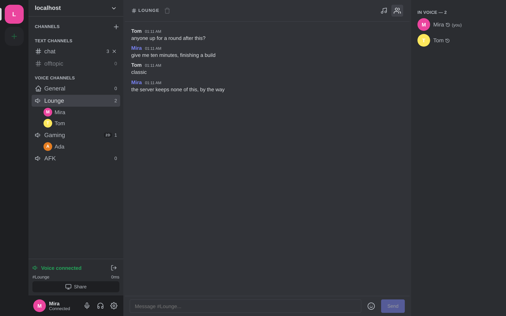
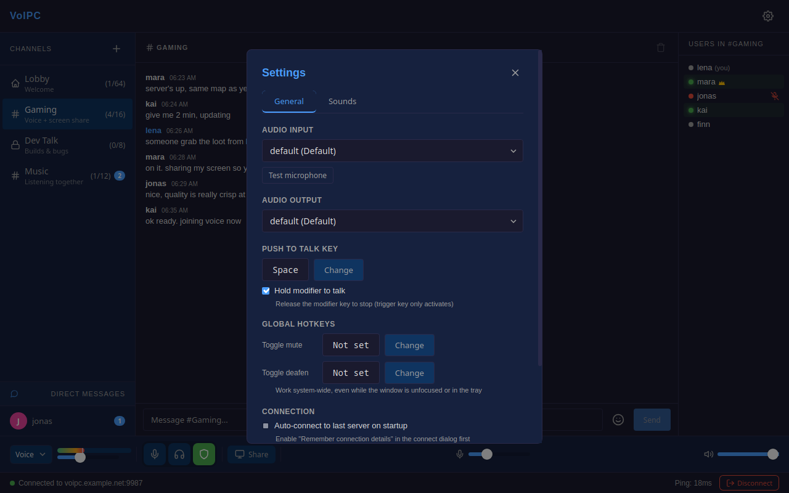
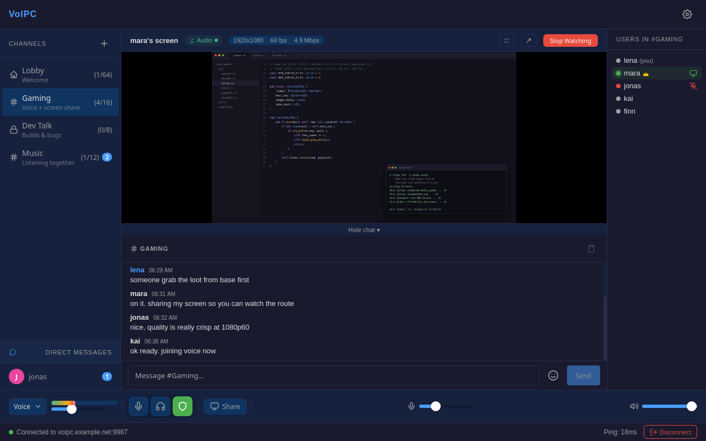
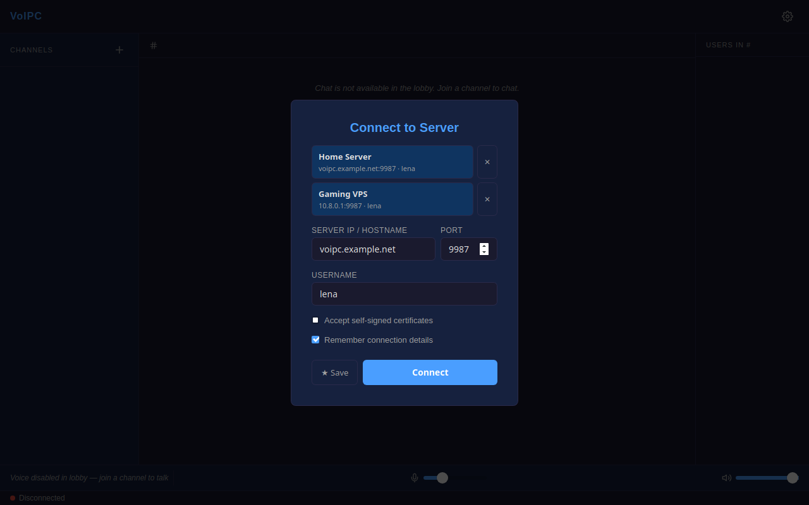

VoIPC is an open-source alternative to Discord and TeamSpeak. Messages are encrypted with the Signal Protocol, voice and video with AES-256-GCM, and the relay server keeps nothing: no accounts, no database, no logs.

Three things, done properly: talking, showing your screen, and writing — all encrypted end to end.
Opus at 48 kHz in 20 ms frames, tuned for speech. RNNoise machine-learning noise suppression runs on-device.

H.265 encoded on your GPU — NVENC, QuickSync, or AMF, with software fallback. Windows builds ship the hardware encoders since 0.4.0.

Channel messages and DMs ride the Signal Protocol — the server relays ciphertext it cannot read. History is optional and stays on your disk, encrypted.
channels.json on the server
Rust end to end: Tokio server, Tauri 2 client with a Svelte 5 frontend. Numbers below are from the code, not the brochure.
channels.jsonFive layers, from the TLS socket to the file on your disk. The server forwards ciphertext it cannot read.
Zeroizing<T>, wiped from memory on dropVoIPC has not had an independent security audit. The code is MIT-licensed and small enough to read — audit it yourself.
Exactly what is stored, and by whom. No fine print.
Two channels per client: TCP for control, UDP for media. The server is a selective forwarding unit — it routes packets, it doesn't read them.
Tauri 2 · Rust + Svelte 5
Tokio SFU · single binary
relays ciphertext, decodes nothing
Tauri 2 · Rust + Svelte 5
Feature by feature, kept checkable.
| Feature | VoIPC | Discord | TeamSpeak |
|---|---|---|---|
| E2E text chat | Yes — Signal Protocol | No | No |
| E2E voice & video | Yes — AES-256-GCM | Partial — DAVE (voice/DM calls) | No |
| Self-hosted | Yes | No | Yes |
| Open source | Yes — MIT | No | No |
| Account required | No | Yes | No |
| Server persistence | None — memory only | Cloud, retained | Logs & database |
| Screen share | H.265, GPU-encoded, 1080p60 | H.264/VP8, higher tiers paid | Limited |
| Runs in a browser | Yes — E2E encrypted, self-hosted | Yes | No |
| Cost | Free — your hardware | Free + paid tiers | Free tier, licensed beyond |
Honest support status — nothing listed that doesn't run today.
| Linux | Windows | Android | Browser | macOS | |
|---|---|---|---|---|---|
| Voice | Yes | Yes | Yes | Yes | — |
| Text chat (E2E) | Yes | Yes | Yes | Yes | — |
| Screen share (send) | PipeWire | WGC | — | — | — |
| Screen share (watch) | Yes | Yes | Yes | Where H.265 decodes | — |
| Desktop audio | PipeWire | WASAPI | — | — | — |
The browser client needs Chrome 97, Edge 98, Firefox 130 or Safari 26.4 (WebTransport and WebCodecs). Watching a screen share additionally needs an H.265 decoder, which browsers only expose on Windows, macOS and Android — voice and chat work everywhere. macOS is not supported yet — there is no macOS-specific code in the tree, so it isn't listed as working.
Grab a client from the releases page, then give your group a server: one static binary, a self-signed cert, and port 9987.
Prebuilt packages on the GitHub releases page, or build from source — setup.sh / setup.ps1 installs the dependencies, build.sh / build.ps1 builds. See BUILDING.md for the per-platform details.
Or install nothing: the server hosts a browser client at https://your-server:9987, with the same Signal and AES-256-GCM encryption compiled to WebAssembly.
# build git clone https://github.com/luki4fun/voipc cd voipc && cargo build -p voipc-server --release # self-signed cert (browsers check the subjectAltName: use your host name / IP) mkdir -p certs openssl req -x509 -newkey ec \ -pkeyopt ec_paramgen_curve:prime256v1 \ -keyout certs/server.key -out certs/server.crt \ -days 365 -nodes -subj "/CN=voipc" \ -addext "subjectAltName=DNS:your-server.example,IP:203.0.113.5" # run (9987 TCP + UDP, 9988 UDP for browsers) ./target/release/voipc-server
Configure via server.toml or CLI flags; drop a channels.json next to the binary for persistent rooms; set admin_token (or take the one printed in the log) to moderate. The same binary serves the browser client over HTTP/2 and WebTransport (web_port, default 9988; 0 turns it off). A Docker release build (./release.sh) produces a static musl binary, an AppImage, and the web bundle.